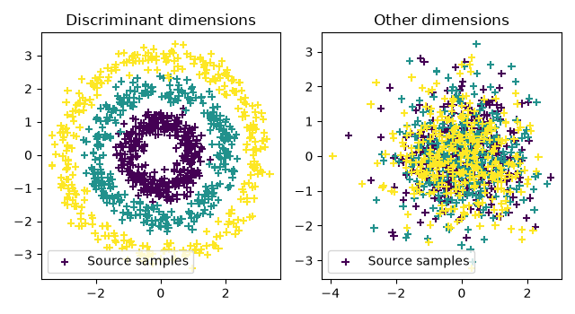
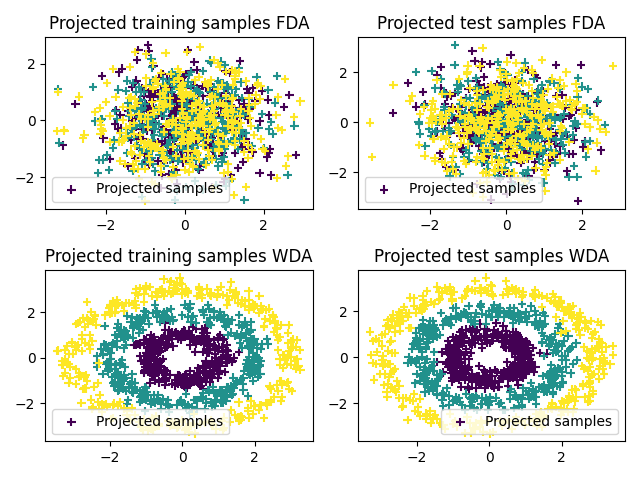

Note
Go to the end to download the full example code.
Wasserstein Discriminant Analysis
Note
Example added in release: 0.3.0.
This example illustrate the use of WDA as proposed in [11].
[11] Flamary, R., Cuturi, M., Courty, N., & Rakotomamonjy, A. (2016). Wasserstein Discriminant Analysis.
Generate data
n = 1000 # nb samples in source and target datasets
nz = 0.2
np.random.seed(1)
# generate circle dataset
t = np.random.rand(n) * 2 * np.pi
ys = np.floor((np.arange(n) * 1.0 / n * 3)) + 1
xs = np.concatenate((np.cos(t).reshape((-1, 1)), np.sin(t).reshape((-1, 1))), 1)
xs = xs * ys.reshape(-1, 1) + nz * np.random.randn(n, 2)
t = np.random.rand(n) * 2 * np.pi
yt = np.floor((np.arange(n) * 1.0 / n * 3)) + 1
xt = np.concatenate((np.cos(t).reshape((-1, 1)), np.sin(t).reshape((-1, 1))), 1)
xt = xt * yt.reshape(-1, 1) + nz * np.random.randn(n, 2)
nbnoise = 8
xs = np.hstack((xs, np.random.randn(n, nbnoise)))
xt = np.hstack((xt, np.random.randn(n, nbnoise)))
Plot data
pl.figure(1, figsize=(6.4, 3.5))
pl.subplot(1, 2, 1)
pl.scatter(xt[:, 0], xt[:, 1], c=ys, marker="+", label="Source samples")
pl.legend(loc=0)
pl.title("Discriminant dimensions")
pl.subplot(1, 2, 2)
pl.scatter(xt[:, 2], xt[:, 3], c=ys, marker="+", label="Source samples")
pl.legend(loc=0)
pl.title("Other dimensions")
pl.tight_layout()

Compute Fisher Discriminant Analysis
Compute Wasserstein Discriminant Analysis
Optimizing...
Iteration Cost Gradient norm
--------- ----------------------- --------------
1 +8.3042777083282548e-01 5.65147147e-01
2 +4.4401038110732488e-01 2.16760501e-01
3 +4.2234351585364366e-01 1.30555048e-01
4 +4.2169880481408129e-01 1.39115419e-01
5 +4.1924747099782617e-01 1.25387890e-01
6 +4.1177411376268330e-01 6.70995304e-02
7 +4.0862213302409783e-01 3.52713968e-02
8 +4.0747230097096188e-01 3.34928269e-02
9 +4.0678763103194787e-01 2.74016586e-02
10 +4.0621339985913313e-01 2.03684098e-02
11 +4.0577080700848533e-01 2.59538519e-02
12 +4.0543186707678464e-01 3.29044109e-02
13 +4.0470249635235872e-01 1.47322025e-02
14 +4.0442126935877643e-01 4.97025257e-02
15 +4.0352362191399066e-01 2.98587403e-02
16 +4.0323065804387598e-01 2.48482972e-02
17 +4.0297475082380702e-01 1.86218160e-02
18 +4.0275854983884773e-01 9.23405222e-03
19 +4.0275441570039811e-01 2.32417280e-02
20 +4.0273808490852325e-01 2.26644033e-02
21 +4.0267611214933885e-01 2.03598500e-02
22 +4.0248571280010909e-01 1.17121294e-02
23 +4.0233554475829647e-01 1.66835506e-02
24 +4.0204556164660493e-01 1.92349530e-02
25 +4.0128126535553577e-01 3.61382852e-02
26 +3.9856633458194535e-01 6.13797936e-02
27 +3.8386888812234898e-01 1.34955933e-01
28 +3.1572322242998313e-01 1.98189822e-01
29 +2.7686262422491442e-01 2.11878927e-01
30 +2.5459640619275442e-01 1.57975963e-01
31 +2.5112844475110546e-01 1.54130167e-01
32 +2.3941332409909394e-01 1.05284373e-01
33 +2.3170511963758728e-01 3.80951752e-02
34 +2.3124885947047283e-01 2.95519138e-02
35 +2.3071646881794050e-01 1.23375293e-02
36 +2.3060859903188954e-01 2.39891745e-03
37 +2.3060602751850365e-01 1.49004146e-03
38 +2.3060502738691088e-01 9.15573641e-04
39 +2.3060470138911848e-01 6.20533746e-04
40 +2.3060444017949622e-01 1.27644502e-04
41 +2.3060443121748575e-01 5.80522061e-05
42 +2.3060443096750979e-01 5.49527677e-05
43 +2.3060443008919729e-01 4.15899401e-05
44 +2.3060442919497479e-01 2.05093585e-05
45 +2.3060442900220371e-01 1.16950572e-05
46 +2.3060442891000349e-01 5.66168594e-07
Terminated - min grad norm reached after 46 iterations, 5.45 seconds.
Plot 2D projections
xsp = projfda(xs)
xtp = projfda(xt)
xspw = projwda(xs)
xtpw = projwda(xt)
pl.figure(2)
pl.subplot(2, 2, 1)
pl.scatter(xsp[:, 0], xsp[:, 1], c=ys, marker="+", label="Projected samples")
pl.legend(loc=0)
pl.title("Projected training samples FDA")
pl.subplot(2, 2, 2)
pl.scatter(xtp[:, 0], xtp[:, 1], c=ys, marker="+", label="Projected samples")
pl.legend(loc=0)
pl.title("Projected test samples FDA")
pl.subplot(2, 2, 3)
pl.scatter(xspw[:, 0], xspw[:, 1], c=ys, marker="+", label="Projected samples")
pl.legend(loc=0)
pl.title("Projected training samples WDA")
pl.subplot(2, 2, 4)
pl.scatter(xtpw[:, 0], xtpw[:, 1], c=ys, marker="+", label="Projected samples")
pl.legend(loc=0)
pl.title("Projected test samples WDA")
pl.tight_layout()
pl.show()

/home/circleci/.local/lib/python3.12/site-packages/matplotlib/cbook.py:1810: ComplexWarning: Casting complex values to real discards the imaginary part
return math.isfinite(val)
/home/circleci/.local/lib/python3.12/site-packages/matplotlib/collections.py:205: ComplexWarning: Casting complex values to real discards the imaginary part
offsets = np.asanyarray(offsets, float)
Total running time of the script: (0 minutes 6.063 seconds)